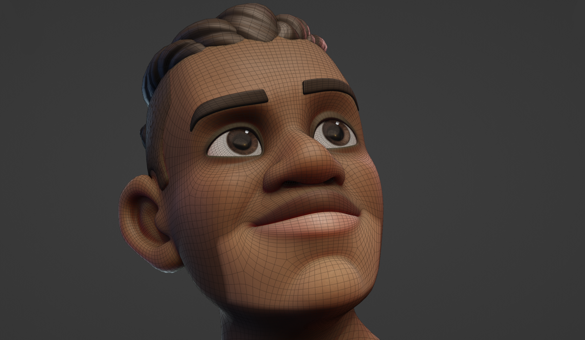

This is a multi-purpose modal operator to intuitively create and edit masks/face sets.
When executed, it uniformly expand outwards a pattern from the vertex under the cursor.
Note
These operators are meant to be used interactively through the shortcut.
Start the operator and expand a mask from an origin to your mouse cursor distance.
Then confirm with LMB or Return
By default the expansion will use a Geodesic falloff 1
to create perfectly accurate distances along the surfaces.
Use other falloff types via 2, 3 & 4 to expand via
triangles, whole faces or scene distances instead.

The typical result when using the Diagonals falloff to expand along the quads of the face.
Start Expand while pointing at an open boundary to expand from the entire boundary loop.
This will always use the Topology falloff mode.
填充相连的网格
Move your cursor outside of the boundaries of the mesh to mask the entire connected mesh.
This can be done repeatedly to quickly mask separate meshes.
填充面组
Hold Ctrl to snap to face sets under your cursor and fill them.
Any face set that was already covered in the expansion will be filled as well.
自动设置变换轴心点
While using any Transform tool, the pivot point
will automatically snap the border of an Expand result.
This way areas (Like limbs) can be masked and then immediately rotated or otherwise transformed.
图案创建
The different falloff types can be used for circular, triangular and square patterns.
More loops can also be added/removed via W & Q to repeat the pattern across the mesh.
An example of using expand with mirror options,
loops and a recursion to create wood carving patterns.
Linear gradients G or brush falloff gradients B will help to add slanted surfaces
to the patterns.
A "Recursions" with R or Alt-R will start
a new expansion along the border of the current expansion.
Doing this multiple times, can help for increasingly random patterns
or advanced pattern creation.
An example of using loops and gradients with multiple expanded masks.
Tip
Remember that Expand only affects visible geometry.
So if a pattern should only be created on a part of the mesh,
hide the other geometry first.
Use the Mesh Filter
to deform the geometry and the Color Filter
to add colors, to apply the patterns on the sculpt.
扩展纹理
Textures can be used to affect the shape and gradients of the expanded mask.
This feature can be combined with loops and recursion to create unique results.
To use a texture, you need to assign it to your currently active brush in the
Texture Brush Settings. The texture can be edited/created
in the Texture Properties.
Note
This texture only works when the Mapping is set to 3D.
Use Y and T to increase or decrease the affect the texture has on the edge of the mask.
F 在扩大正遮罩（值为1）或负遮罩（值为0）之间翻转。在面组的情况下，这个选项在包括遮蔽区域内的区域或遮蔽区域外的区域之间翻转
切换保留状态:
E
Accumulate the new mask on top of the previous one or replace it.
For Face Sets, this will toggle between creating Face Sets boundaries
or replacing the existing Face Sets.
Expand a mask, following the curvature of the surface.
This operator uses the same internal operator as 扩展
meaning all the shortcuts and functionality works the same as that tool.
This operator is especially useful for hard surface sculpting.
Tip
If one expansion does not properly fill the entire desired surface,
use the operator repeatedly with a different starting point.
Note
Using any of the Falloff shortcuts 1-4
will replace the curvature falloff of this operator.
Expands a face set from the active vertex.
This operator uses the same internal operator as 扩展
meaning all the hotkeys and functionality works the same as that tool,
with the gradient features as the exception.
Expanding Face Sets has all the same use cases as expanding masks.
The advantage for this one is that they will be saved for repeated usage.
Face sets can be filled any time with a mask,
so assigning areas face sets will save you time.
(And of course face sets can be used to
hide face sets)
姿态笔刷的轴心点
When using the Pose Brush it is most predictable when using it with
Face Sets to define the face set boundaries as pivot point locations.
Face Sets can be expanded from a point or from a boundary between hidden face sets
to create them quickly.
Alternatively Grow/Shrink Face Sets
or use the Expand Active Face Set to dynamically grow/shrink them.
布料雕刻
Tools like the Cloth Filter
and Cloth Brush
work especially well when only simulating small areas at a time.
Face Sets can very easily be created with Expand to assign areas of action.
Expands an existing face set with a geodesic falloff.
This operator uses the same internal operator as 扩展
meaning all the hotkeys and functionality works the same as that tool.